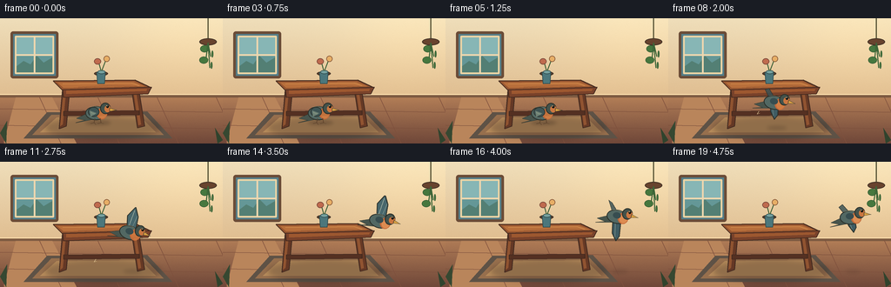
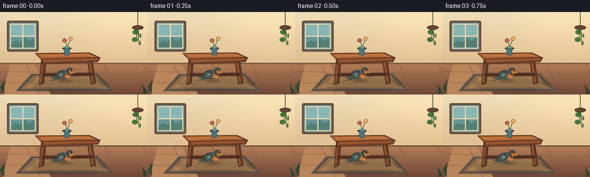
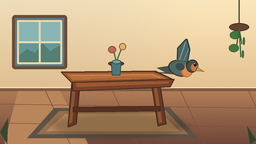

CODING AGENTS AS PIXEL WORLD MODELS
traex/GPT-5.6-Sol · dynamic_spatial_relationship_0042
点击播放 · 原生 RGB 像素
逐轮保存的候选
回放视频、检查图与代码变化。
每份候选均可单独播放。实际图片检查记录在下方工具轨迹中。
候选 01播放与检查图
点击播放 · 原生 RGB 像素


展开代码变化
--- 上一保存版本
+++ 本次保存版本
@@ -0,0 +1,249 @@
+from pathlib import Path
+import math
+import numpy as np
+from PIL import Image, ImageDraw, ImageFilter
+import artifact_io
+
+W, H, N = 256, 144, 20
+S = 4 # supersampling
+rng = np.random.default_rng(42)
+
+def sc(v):
+ if isinstance(v, (tuple, list)):
+ return tuple(int(round(x*S)) for x in v)
+ return int(round(v*S))
+
+def line(draw, points, fill, width=1, joint='curve'):
+ draw.line([sc(p) for p in points], fill=fill, width=sc(width), joint=joint)
+
+def poly(draw, points, fill, outline=None, width=1):
+ pts = [sc(p) for p in points]
+ draw.polygon(pts, fill=fill)
+ if outline:
+ draw.line(pts + [pts[0]], fill=outline, width=sc(width), joint='curve')
+
+def ellipse(draw, box, fill, outline=None, width=1):
+ draw.ellipse(sc(box), fill=fill, outline=outline, width=sc(width) if outline else 1)
+
+def rounded(draw, box, radius, fill, outline=None, width=1):
+ draw.rounded_rectangle(sc(box), radius=sc(radius), fill=fill, outline=outline,
+ width=sc(width) if outline else 1)
+
+def make_background():
+ # Smooth late-afternoon wall and terracotta floor gradients.
+ y = np.arange(H*S)[:, None]
+ x = np.arange(W*S)[None, :]
+ arr = np.zeros((H*S, W*S, 3), dtype=np.float32)
+ wall_top = np.array([239, 222, 186.], dtype=np.float32)
+ wall_bot = np.array([224, 190, 145.], dtype=np.float32)
+ floor_top = np.array([177, 125, 87.], dtype=np.float32)
+ floor_bot = np.array([111, 71, 57.], dtype=np.float32)
+ horizon = 89*S
+ yy = np.broadcast_to(y, (H*S, W*S))
+ t = np.clip(yy / horizon, 0, 1)[..., None]
+ wall = wall_top*(1-t) + wall_bot*t
+ tf = np.clip((yy-horizon)/(H*S-horizon),0,1)[...,None]
+ floor = floor_top*(1-tf)+floor_bot*tf
+ arr[:] = np.where((yy < horizon)[...,None], wall, floor)
+ # warm light from upper right
+ glow = np.exp(-(((x-218*S)/(90*S))**2 + ((y-17*S)/(65*S))**2))[...,None]
+ arr += glow*np.array([12,9,2.])
+ noise = rng.normal(0, 1.25, (H*S, W*S, 1))
+ arr += noise
+ return Image.fromarray(np.uint8(np.clip(arr,0,255)), 'RGB')
+
+BG = make_background()
+
+def draw_setting(img, frame):
+ d = ImageDraw.Draw(img)
+ # Wall trim / horizon
+ d.rectangle(sc((0,87,256,91)), fill=(126,91,66))
+ d.rectangle(sc((0,87,256,88)), fill=(250,220,171))
+ # Window on left, kept subtle and behind the central action.
+ rounded(d, (12,15,67,69), 3, (84,126,137), (107,76,55), 3)
+ rounded(d, (17,20,62,64), 1, (116,166,172), (237,213,165), 2)
+ # sky reflected in panes
+ d.rectangle(sc((19,22,60,62)), fill=(135,182,181))
+ d.rectangle(sc((19,43,60,62)), fill=(100,151,151))
+ # distant silhouettes
+ poly(d, [(19,55),(27,49),(35,53),(42,43),(50,51),(60,45),(60,62),(19,62)], (83,127,116))
+ line(d, [(39.5,21),(39.5,63)], (238,215,175), 2)
+ line(d, [(18,42),(61,42)], (238,215,175), 2)
+ # Soft window highlight on floor
+ poly(d, [(18,91),(60,91),(88,144),(4,144)], (185,133,91))
+ for yy in (104,123):
+ line(d, [(0,yy),(256,yy+4)], (124,79,60), 0.7)
+ for xx in (-20,45,112,180,248):
+ line(d, [(xx,90),(xx+25,144)], (126,80,61), 0.7)
+ # Rug under table, perspective and border
+ poly(d, [(54,108),(169,107),(198,138),(27,138)], (94,82,70))
+ poly(d, [(59,111),(165,110),(188,134),(37,134)], (151,111,77))
+ poly(d, [(65,114),(161,113),(179,131),(46,131)], (182,139,91))
+ # Background hanging plant on right edge (doesn't confuse relationship).
+ line(d, [(239,0),(239,26)], (77,74,45), 1.3)
+ ellipse(d, (229,23,249,31), (104,67,46), (69,52,39), 1)
+ sway = math.sin(frame*0.25)*0.7
+ for ox, oy, side in [(-2,28,-1),(3,34,1),(-3,41,-1),(2,47,1)]:
+ line(d, [(239,28),(239+ox+sway,oy+10)], (61,101,56), 1.2)
+ ellipse(d, (236+ox+side*4+sway, oy+3, 242+ox+sway, oy+11), (70,119,62), (45,82,47), .6)
+ # Table cast shadow (painted before table and bird)
+ shadow = Image.new('RGBA', img.size, (0,0,0,0))
+ sd = ImageDraw.Draw(shadow)
+ sd.ellipse(sc((52,113,184,138)), fill=(45,32,30,70))
+ shadow = shadow.filter(ImageFilter.GaussianBlur(sc(3)))
+ img.paste(shadow, (0,0), shadow)
+
+ d = ImageDraw.Draw(img)
+ # Wooden table legs, rear first.
+ poly(d, [(72,80),(80,81),(76,124),(68,127)], (100,56,37), (67,43,33), 1)
+ poly(d, [(151,80),(159,80),(166,124),(158,126)], (102,57,37), (67,43,33), 1)
+ # leg highlights
+ poly(d, [(73,82),(76,82),(72,122),(69,124)], (143,83,48))
+ poly(d, [(153,82),(156,82),(162,122),(159,123)], (145,84,49))
+ # support bar
+ poly(d, [(73,107),(160,106),(160,111),(73,112)], (84,48,34), (61,39,30), .8)
+ # Table top, rich layered wood. top is in perspective.
+ poly(d, [(61,72),(155,71),(174,80),(72,83)], (151,86,48), (70,43,31), 1.2)
+ poly(d, [(66,74),(153,73),(166,78),(73,80)], (184,111,59))
+ # wood grain and highlight
+ line(d, [(72,75.5),(151,74.5),(160,77.5)], (216,147,82), .7)
+ line(d, [(90,79),(128,77),(157,78)], (126,69,43), .55)
+ # front apron
+ poly(d, [(72,82),(174,79),(170,87),(73,91)], (121,66,42), (66,42,32), 1)
+ poly(d, [(76,83),(169,81),(168,83.5),(76,87)], (157,88,48))
+ # tiny vase on table to make the surface unambiguous
+ ellipse(d, (108,61,124,66), (84,62,44), (63,46,35), .8)
+ poly(d, [(111,62),(121,62),(120,75),(112,75)], (75,119,124), (48,76,78), .8)
+ ellipse(d, (112,59.5,121,64), (116,160,158), (48,76,78), .7)
+ line(d, [(116,60),(113,49)], (55,91,51), 1)
+ line(d, [(117,60),(122,47)], (55,91,51), 1)
+ ellipse(d, (108,46,116,53), (191,107,78), (119,68,55), .7)
+ ellipse(d, (119,43,126,50), (231,174,102), (130,84,54), .7)
+
+def bird_position(i):
+ if i <= 5:
+ return 113 + 0.35*math.sin(i*1.4), 108 - 0.35*math.sin(i*1.1), 0.0
+ t = (i-5)/14.0
+ e = t*t*(3-2*t)
+ x = 113 + 99*e
+ # takeoff arc that rises decisively and ends to right of table
+ y = 107 - 44*e - 9*math.sin(math.pi*t)
+ # body pitches upward early, levels near destination
+ angle = -18*math.sin(math.pi*t)
+ return x, y, angle
+
+def draw_bird(img, i):
+ x, y, angle = bird_position(i)
+ flying = i >= 6
+ # Ground / flight shadow gives depth and emphasizes movement.
+ ov = Image.new('RGBA', img.size, (0,0,0,0))
+ od = ImageDraw.Draw(ov)
+ if flying:
+ t=(i-5)/14
+ sy=126
+ spread=max(4, 12-4*t)
+ od.ellipse(sc((x-spread,sy-2,x+spread,sy+2)), fill=(44,31,29, max(18,int(55*(1-t*.5)))))
+ else:
+ od.ellipse(sc((x-15,118,x+14,122)), fill=(43,29,26,75))
+ ov=ov.filter(ImageFilter.GaussianBlur(sc(2)))
+ img.paste(ov,(0,0),ov)
+
+ # Draw bird on a generous transparent local canvas and rotate as one object.
+ BS=4
+ bw,bh=58*BS,58*BS
+ layer=Image.new('RGBA',(bw,bh),(0,0,0,0))
+ bd=ImageDraw.Draw(layer)
+ cx,cy=28*BS,29*BS
+ def P(px,py): return (int(cx+px*BS),int(cy+py*BS))
+ def E(box,fill,outline=None,w=1):
+ b=(int(cx+box[0]*BS),int(cy+box[1]*BS),int(cx+box[2]*BS),int(cy+box[3]*BS))
+ bd.ellipse(b,fill=fill,outline=outline,width=max(1,int(w*BS)))
+ def G(points,fill,outline=None,w=1):
+ ps=[P(a,b) for a,b in points]; bd.polygon(ps,fill=fill)
+ if outline: bd.line(ps+[ps[0]],fill=outline,width=max(1,int(w*BS)),joint='curve')
+ def L(points,fill,w=1): bd.line([P(a,b) for a,b in points],fill=fill,width=max(1,int(w*BS)),joint='curve')
+
+ outline=(43,48,42,255)
+ # far tail and far wing
+ G([(-11,1),(-24,7),(-14,9),(-25,12),(-5,8)], (71,84,76,255), outline, .7)
+ if flying:
+ phase=(i-6)*1.7
+ wing=math.sin(phase)
+ # alternating broad upstroke/downstroke silhouette
+ if wing >= 0:
+ tipy=-15-10*wing
+ G([(-6,-2),(-10,tipy+6),(-4,tipy-6),(2,tipy+4),(4,-1)],
+ (72,103,108,255), outline, 1)
+ # feather divisions
+ L([(-5,-5),(-4,tipy-2)],(147,168,158,230),.75)
+ L([(-1,-4),(1,tipy+3)],(130,157,151,230),.65)
+ else:
+ a=-wing
+ tipy=12+12*a
+ G([(-7,0),(-4,tipy-3),(2,tipy+5),(5,tipy-1),(3,1)],
+ (63,92,99,255), outline, 1)
+ L([(-3,6),(0,tipy+1)],(138,158,151,230),.7)
+ # far wing offset, visible behind
+ if wing < .3:
+ G([(-7,-1),(-15,-10-6*a if wing<0 else -12),(-11,-14),(-2,-4)],
+ (55,79,82,210),outline,.7)
+ # body
+ E((-14,-7,10,9),(82,104,99,255),outline,1)
+ # warm belly/chest
+ E((-1,-5,11,8),(194,105,58,255),None)
+ E((1,-3,10,7),(218,128,67,210),None)
+ # near folded wing for standing bird or wing root in flight
+ if not flying:
+ E((-11,-6,2,5),(62,84,84,255),outline,.75)
+ G([(-9,-2),(-1,1),(-8,5)],(111,130,117,255))
+ L([(-8,0),(-3,2)],(170,181,151,255),.65)
+ else:
+ E((-7,-4,2,3),(55,77,80,255),None)
+ # head, face patch
+ E((3,-11,15,2),(67,82,75,255),outline,1)
+ E((8,-8,15,0),(202,118,64,255),None)
+ # bright eye + catchlight
+ E((10,-8,13,-5),(19,23,20,255),None)
+ E((10.6,-7.7,11.4,-6.9),(245,237,197,255),None)
+ # beak points right
+ G([(14,-5),(22,-2.5),(14,-1)],(216,159,66,255),outline,.7)
+ # body highlight
+ L([(-9,-6),(-3,-7),(2,-6)],(153,164,139,180),.7)
+ # feet while in front of table at start
+ if not flying:
+ L([(-3,7),(-4,12),(-8,13)],(91,65,43,255),.8)
+ L([(3,7),(4,12),(0,13)],(91,65,43,255),.8)
+ L([(-4,12),(-2,14)],(91,65,43,255),.55)
+ L([(4,12),(7,13)],(91,65,43,255),.55)
+
+ if abs(angle)>0.05:
+ layer=layer.rotate(angle,resample=Image.Resampling.BICUBIC,expand=False,center=(cx,cy))
+ px=int(round(x*S-bw/2)); py=int(round(y*S-bh/2))
+ img.paste(layer,(px,py),layer)
+
+ # a couple of tiny feather motes during takeoff, restrained and frame-dependent
+ if 8 <= i <= 12:
+ d=ImageDraw.Draw(img)
+ k=i-8
+ fx=104+k*2; fy=107+k*1.7
+ line(d,[(fx,fy),(fx-2,fy+3),(fx+1,fy+2)],(222,196,147),.55)
+
+def draw_foreground(img):
+ d=ImageDraw.Draw(img)
+ # sparse foreground leaves create depth without obstructing bird's destination
+ for pts in [([(0,132),(8,118),(7,144)],(54,72,49)),
+ ([(256,140),(247,126),(250,144)],(48,67,45))]:
+ poly(d,pts[0],pts[1])
+
+frames=[]
+for i in range(N):
+ im=BG.copy()
+ draw_setting(im,i)
+ draw_bird(im,i)
+ draw_foreground(im)
+ im=im.resize((W,H),Image.Resampling.LANCZOS).convert('RGB')
+ frames.append(np.asarray(im,dtype=np.uint8))
+
+frames=np.stack(frames,axis=0)
+assert frames.shape==(20,144,256,3) and frames.dtype==np.uint8
+artifact_io.save(frames,Path(__file__).resolve().parent)
可观测工具轨迹
实际执行的命令与返回图片。
命令 1exit 0
/bin/bash -lc "cat prompt.txt && printf '\\n--- GENERATION_RULES.md ---\\n' && cat GENERATION_RULES.md"
命令 2exit 0
/bin/bash -lc "cat task_spec.json && printf '\\n--- FILES ---\\n' && find . -maxdepth 2 -type f -printf '%p\\n' | sort"
命令 3exit 0
/bin/bash -lc 'cat artifact_io.py'
命令 4exit 0
/bin/bash -lc "cat > generate.py <<'PY'
from pathlib import Path
import math
import numpy as np
from PIL import Image, ImageDraw, ImageFilter
import artifact_io
W, H, N = 256, 144, 20
S = 4 # supersampling
rng = np.random.default_rng(42)
def sc(v):
if isinstance(v, (tuple, list)):
return tuple(int(round(x*S)) for x in v)
return int(round(v*S))
def line(draw, points, fill, width=1, joint='curve'):
draw.line([sc(p) for p in points], fill=fill, width=sc(width), joint=joint)
def poly(draw, points, fill, outline=None, width=1):
pts = [sc(p) for p in points]
draw.polygon(pts, fill=fill)
if outline:
draw.line(pts + [pts[0]], fill=outline, width=sc(width), joint='curve')
def ellipse(draw, box, fill, outline=None, width=1):
draw.ellipse(sc(box), fill=fill, outline=outline, width=sc(width) if outline else 1)
def rounded(draw, box, radius, fill, outline=None, width=1):
draw.rounded_rectangle(sc(box), radius=sc(radius), fill=fill, outline=outline,
width=sc(width) if outline else 1)
def make_background():
# Smooth late-afternoon wall and terracotta floor gradients.
y = np.arange(H*S)[:, None]
x = np.arange(W*S)[None, :]
arr = np.zeros((H*S, W*S, 3), dtype=np.float32)
wall_top = np.array([239, 222, 186.], dtype=np.float32)
wall_bot = np.array([224, 190, 145.], dtype=np.float32)
floor_top = np.array([177, 125, 87.], dtype=np.float32)
floor_bot = np.array([111, 71, 57.], dtype=np.float32)
horizon = 89*S
yy = np.broadcast_to(y, (H*S, W*S))
t = np.clip(yy / horizon, 0, 1)[..., None]
wall = wall_top*(1-t) + wall_bot*t
tf = np.clip((yy-horizon)/(H*S-horizon),0,1)[...,None]
floor = floor_top*(1-tf)+floor_bot*tf
arr[:] = np.where((yy < horizon)[...,None], wall, floor)
# warm light from upper right
glow = np.exp(-(((x-218*S)/(90*S))**2 + ((y-17*S)/(65*S))**2))[...,None]
arr += glow*np.array([12,9,2.])
noise = rng.normal(0, 1.25, (H*S, W*S, 1))
arr += noise
return Image.fromarray(np.uint8(np.clip(arr,0,255)), 'RGB')
BG = make_background()
def draw_setting(img, frame):
d = ImageDraw.Draw(img)
# Wall trim / horizon
d.rectangle(sc((0,87,256,91)), fill=(126,91,66))
d.rectangle(sc((0,87,256,88)), fill=(250,220,171))
# Window on left, kept subtle and behind the central action.
rounded(d, (12,15,67,69), 3, (84,126,137), (107,76,55), 3)
rounded(d, (17,20,62,64), 1, (116,166,172), (237,213,165), 2)
# sky reflected in panes
d.rectangle(sc((19,22,60,62)), fill=(135,182,181))
d.rectangle(sc((19,43,60,62)), fill=(100,151,151))
# distant silhouettes
poly(d, [(19,55),(27,49),(35,53),(42,43),(50,51),(60,45),(60,62),(19,62)], (83,127,116))
line(d, [(39.5,21),(39.5,63)], (238,215,175), 2)
line(d, [(18,42),(61,42)], (238,215,175), 2)
# Soft window highlight on floor
poly(d, [(18,91),(60,91),(88,144),(4,144)], (185,133,91))
for yy in (104,123):
line(d, [(0,yy),(256,yy+4)], (124,79,60), 0.7)
for xx in (-20,45,112,180,248):
line(d, [(xx,90),(xx+25,144)], (126,80,61), 0.7)
# Rug under table, perspective and border
poly(d, [(54,108),(169,107),(198,138),(27,138)], (94,82,70))
poly(d, [(59,111),(165,110),(188,134),(37,134)], (151,111,77))
poly(d, [(65,114),(161,113),(179,131),(46,131)], (182,139,91))
# Background hanging plant on right edge (doesn't confuse relationship).
line(d, [(239,0),(239,26)], (77,74,45), 1.3)
ellipse(d, (229,23,249,31), (104,67,46), (69,52,39), 1)
sway = math.sin(frame*0.25)*0.7
for ox, oy, side in [(-2,28,-1),(3,34,1),(-3,41,-1),(2,47,1)]:
line(d, [(239,28),(239+ox+sway,oy+10)], (61,101,56), 1.2)
ellipse(d, (236+ox+side*4+sway, oy+3, 242+ox+sway, oy+11), (70,119,62), (45,82,47), .6)
# Table cast shadow (painted before table and bird)
shadow = Image.new('RGBA', img.size, (0,0,0,0))
sd = ImageDraw.Draw(shadow)
sd.ellipse(sc((52,113,184,138)), fill=(45,32,30,70))
shadow = shadow.filter(ImageFilter.GaussianBlur(sc(3)))
img.paste(shadow, (0,0), shadow)
d = ImageDraw.Draw(img)
# Wooden table legs, rear first.
poly(d, [(72,80),(80,81),(76,124),(68,127)], (100,56,37), (67,43,33), 1)
poly(d, [(151,80),(159,80),(166,124),(158,126)], (102,57,37), (67,43,33), 1)
# leg highlights
poly(d, [(73,82),(76,82),(72,122),(69,124)], (143,83,48))
poly(d, [(153,82),(156,82),(162,122),(159,123)], (145,84,49))
# support bar
poly(d, [(73,107),(160,106),(160,111),(73,112)], (84,48,34), (61,39,30), .8)
# Table top, rich layered wood. top is in perspective.
poly(d, [(61,72),(155,71),(174,80),(72,83)], (151,86,48), (70,43,31), 1.2)
poly(d, [(66,74),(153,73),(166,78),(73,80)], (184,111,59))
# wood grain and highlight
line(d, [(72,75.5),(151,74.5),(160,77.5)], (216,147,82), .7)
line(d, [(90,79),(128,77),(157,78)], (126,69,43), .55)
# front apron
poly(d, [(72,82),(174,79),(170,87),(73,91)], (121,66,42), (66,42,32), 1)
poly(d, [(76,83),(169,81),(168,83.5),(76,87)], (157,88,48))
# tiny vase on table to make the surface unambiguous
ellipse(d, (108,61,124,66), (84,62,44), (63,46,35), .8)
poly(d, [(111,62),(121,62),(120,75),(112,75)], (75,119,124), (48,76,78), .8)
ellipse(d, (112,59.5,121,64), (116,160,158), (48,76,78), .7)
line(d, [(116,60),(113,49)], (55,91,51), 1)
line(d, [(117,60),(122,47)], (55,91,51), 1)
ellipse(d, (108,46,116,53), (191,107,78), (119,68,55), .7)
ellipse(d, (119,43,126,50), (231,174,102), (130,84,54), .7)
def bird_position(i):
if i <= 5:
return 113 + 0.35*math.sin(i*1.4), 108 - 0.35*math.sin(i*1.1), 0.0
t = (i-5)/14.0
e = t*t*(3-2*t)
x = 113 + 99*e
# takeoff arc that rises decisively and ends to right of table
y = 107 - 44*e - 9*math.sin(math.pi*t)
# body pitches upward early, levels near destination
angle = -18*math.sin(math.pi*t)
return x, y, angle
def draw_bird(img, i):
x, y, angle = bird_position(i)
flying = i >= 6
# Ground / flight shadow gives depth and emphasizes movement.
ov = Image.new('RGBA', img.size, (0,0,0,0))
od = ImageDraw.Draw(ov)
if flying:
t=(i-5)/14
sy=126
spread=max(4, 12-4*t)
od.ellipse(sc((x-spread,sy-2,x+spread,sy+2)), fill=(44,31,29, max(18,int(55*(1-t*.5)))))
else:
od.ellipse(sc((x-15,118,x+14,122)), fill=(43,29,26,75))
ov=ov.filter(ImageFilter.GaussianBlur(sc(2)))
img.paste(ov,(0,0),ov)
# Draw bird on a generous transparent local canvas and rotate as one object.
BS=4
bw,bh=58*BS,58*BS
layer=Image.new('RGBA',(bw,bh),(0,0,0,0))
bd=ImageDraw.Draw(layer)
cx,cy=28*BS,29*BS
def P(px,py): return (int(cx+px*BS),int(cy+py*BS))
def E(box,fill,outline=None,w=1):
b=(int(cx+box[0]*BS),int(cy+box[1]*BS),int(cx+box[2]*BS),int(cy+box[3]*BS))
bd.ellipse(b,fill=fill,outline=outline,width=max(1,int(w*BS)))
def G(points,fill,outline=None,w=1):
ps=[P(a,b) for a,b in points]; bd.polygon(ps,fill=fill)
if outline: bd.line(ps+[ps[0]],fill=outline,width=max(1,int(w*BS)),joint='curve')
def L(points,fill,w=1): bd.line([P(a,b) for a,b in points],fill=fill,width=max(1,int(w*BS)),joint='curve')
outline=(43,48,42,255)
# far tail and far wing
G([(-11,1),(-24,7),(-14,9),(-25,12),(-5,8)], (71,84,76,255), outline, .7)
if flying:
phase=(i-6)*1.7
wing=math.sin(phase)
# alternating broad upstroke/downstroke silhouette
if wing >= 0:
tipy=-15-10*wing
G([(-6,-2),(-10,tipy+6),(-4,tipy-6),(2,tipy+4),(4,-1)],
(72,103,108,255), outline, 1)
# feather divisions
L([(-5,-5),(-4,tipy-2)],(147,168,158,230),.75)
L([(-1,-4),(1,tipy+3)],(130,157,151,230),.65)
else:
a=-wing
tipy=12+12*a
G([(-7,0),(-4,tipy-3),(2,tipy+5),(5,tipy-1),(3,1)],
(63,92,99,255), outline, 1)
L([(-3,6),(0,tipy+1)],(138,158,151,230),.7)
# far wing offset, visible behind
if wing < .3:
G([(-7,-1),(-15,-10-6*a if wing<0 else -12),(-11,-14),(-2,-4)],
(55,79,82,210),outline,.7)
# body
E((-14,-7,10,9),(82,104,99,255),outline,1)
# warm belly/chest
E((-1,-5,11,8),(194,105,58,255),None)
E((1,-3,10,7),(218,128,67,210),None)
# near folded wing for standing bird or wing root in flight
if not flying:
E((-11,-6,2,5),(62,84,84,255),outline,.75)
G([(-9,-2),(-1,1),(-8,5)],(111,130,117,255))
L([(-8,0),(-3,2)],(170,181,151,255),.65)
else:
E((-7,-4,2,3),(55,77,80,255),None)
# head, face patch
E((3,-11,15,2),(67,82,75,255),outline,1)
E((8,-8,15,0),(202,118,64,255),None)
# bright eye + catchlight
E((10,-8,13,-5),(19,23,20,255),None)
E((10.6,-7.7,11.4,-6.9),(245,237,197,255),None)
# beak points right
G([(14,-5),(22,-2.5),(14,-1)],(216,159,66,255),outline,.7)
# body highlight
L([(-9,-6),(-3,-7),(2,-6)],(153,164,139,180),.7)
# feet while in front of table at start
if not flying:
L([(-3,7),(-4,12),(-8,13)],(91,65,43,255),.8)
L([(3,7),(4,12),(0,13)],(91,65,43,255),.8)
L([(-4,12),(-2,14)],(91,65,43,255),.55)
L([(4,12),(7,13)],(91,65,43,255),.55)
if abs(angle)>0.05:
layer=layer.rotate(angle,resample=Image.Resampling.BICUBIC,expand=False,center=(cx,cy))
px=int(round(x*S-bw/2)); py=int(round(y*S-bh/2))
img.paste(layer,(px,py),layer)
# a couple of tiny feather motes during takeoff, restrained and frame-dependent
if 8 <= i <= 12:
d=ImageDraw.Draw(img)
k=i-8
fx=104+k*2; fy=107+k*1.7
line(d,[(fx,fy),(fx-2,fy+3),(fx+1,fy+2)],(222,196,147),.55)
def draw_foreground(img):
d=ImageDraw.Draw(img)
# sparse foreground leaves create depth without obstructing bird's destination
for pts in [([(0,132),(8,118),(7,144)],(54,72,49)),
([(256,140),(247,126),(250,144)],(48,67,45))]:
poly(d,pts[0],pts[1])
frames=[]
for i in range(N):
im=BG.copy()
draw_setting(im,i)
draw_bird(im,i)
draw_foreground(im)
im=im.resize((W,H),Image.Resampling.LANCZOS).convert('RGB')
frames.append(np.asarray(im,dtype=np.uint8))
frames=np.stack(frames,axis=0)
assert frames.shape==(20,144,256,3) and frames.dtype==np.uint8
artifact_io.save(frames,Path(__file__).resolve().parent)
PY
python generate.py
ls -lh pixels.npz inspection.png index.html frames/00.png frames/19.png"命令 5exit 0
/bin/bash -lc "python - <<'PY'
from pathlib import Path
import numpy as np
from PIL import Image
p=np.load('pixels.npz')['pixels']
assert p.shape==(144,256,20) and p.dtype==np.uint32
ims=[]
for f in range(20):
v=p[:,:,f]
rgb=np.stack([(v>>16)&255,(v>>8)&255,v&255],axis=-1).astype(np.uint8)
ims.append(rgb)
print('npz',p.shape,p.dtype,'unique RGB colors',len(np.unique(p)),'frame-change pixels', [int(np.any(ims[i]"'!=ims[i-1],axis=2).sum()) for i in range(1,20)])
print('"'artifacts', all(Path(x).exists() for x in ['index.html','inspection.png','transition_check.png']),'frame pngs',len(list(Path('frames').glob('*.png'))))
PY"视觉工具实际返回图片 1

视觉工具实际返回图片 2

保存候选 1 份；完成命令 5 次；可验证图片返回 2 张。原始 API 响应与完整日志保留在本地。